<!DOCTYPE html>
<html lang="en">
<head>
<meta charset="UTF-8">
<meta name="viewport" content="width=device-width,initial-scale=1">
<title>Figure it Out — Lines and Angles</title>
<meta name="description" content="Class 6 Mathematics · Lines and Angles · Figure it Out">
<link rel="icon" href="data:image/svg+xml,<svg xmlns='http://www.w3.org/2000/svg' viewBox='0 0 100 100'><text y='.9em' font-size='90'>📘</text></svg>">
<link rel="stylesheet" href="../../../assets/book.css">
<link rel="stylesheet" href="https://cdn.jsdelivr.net/npm/katex@0.16.11/dist/katex.min.css" crossorigin="anonymous">
</head>
<body>
<header class="topbar">
<div class="topbar-in">
  <div class="crumb">
    <span class="c1"><a href="../../../index.html">Library</a> · <a href="../../index.html">Class 6 Mathematics</a></span>
    <span class="c2">Lines and Angles · Figure it Out</span>
  </div>
  <a class="tb-btn" data-nav="prev" href="../../02-lines-and-angles/18-labelled-protractor/index.html" title="Labelled protractor">←</a>
  <details class="drawer"><summary class="tb-btn" title="Sections in this chapter">☰</summary>
<div class="drawer-panel"><div class="dh">Lines and Angles</div><a href="../01-chapter-opener/index.html">Chapter opener; 2.1 Point</a><a href="../02-line-segment-2.2/index.html">2.2 Line Segment</a><a href="../03-line-2.3/index.html">2.3 Line</a><a href="../04-ray-2.4/index.html">2.4 Ray</a><a href="../05-figure-it-out/index.html">Figure it Out</a><a href="../06-angle-d-2.5/index.html">2.5 Angle D</a><a href="../07-figure-it-out/index.html">Figure it Out</a><a href="../08-comparing-angles-2.6/index.html">2.6 Comparing Angles</a><a href="../09-figure-it-out/index.html">Figure it Out</a><a href="../10-making-rotating-arms-2.7/index.html">2.7 Making Rotating Arms</a><a href="../11-special-types-of-angles-2.8/index.html">2.8 Special Types of Angles</a><a href="../12-figure-it-out/index.html">Figure it Out</a><a href="../13-figure-it-out/index.html">Figure it Out</a><a href="../14-measuring-angles-2.9/index.html">2.9 Measuring Angles</a><a href="../15-degree-measures-of-different-angles/index.html">Degree measures of different angles</a><a href="../16-unlabelled-protractor/index.html">Unlabelled protractor</a><a href="../17-figure-it-out/index.html">Figure it Out</a><a href="../18-labelled-protractor/index.html">Labelled protractor</a><a href="../19-figure-it-out/index.html" aria-current="page">Figure it Out</a><a href="../20-figure-it-out/index.html">Figure it Out</a><a href="../21-drawing-angles-2.10/index.html">2.10 Drawing Angles</a><a href="../22-figure-it-out/index.html">Figure it Out</a><a href="../23-types-of-angles-and-their-measures-2.11/index.html">2.11 Types of Angles and their Measures</a><a href="../24-figure-it-out/index.html">Figure it Out</a><a href="../25-figure-it-out/index.html">Figure it Out</a><a href="../26-summary/index.html">Summary</a><a href="../27-solutions/index.html">CHAPTER 2 — SOLUTIONS</a></div></details>
  <a class="tb-btn" data-nav="next" href="../../02-lines-and-angles/20-figure-it-out/index.html" title="Figure it Out">→</a>
  <button class="tb-btn" data-theme-toggle title="Toggle light / dark" aria-label="Toggle light or dark theme">◐</button>
</div>
<div class="progress"><span style="width:17.0%"></span></div>
</header>
<main class="wrap">
<div class="sec-head">
  <p class="eyebrow"><a href="../index.html">Chapter 2 · Lines and Angles</a></p>
  <h1>Figure it Out</h1>
  <p class="sec-meta">Textbook pages 28–33 · 19 figures</p>
</div>
<article class="prose">
<ul class="qlist">
<li><span class="mk">1.</span><span class="lt">Find the degree measures of the following angles using your</span></li>
</ul>
<p>protractor.</p>
<figure class="fig side-fig">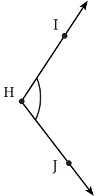</figure>
<figure class="fig">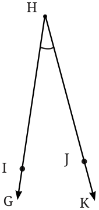</figure>
<figure class="fig">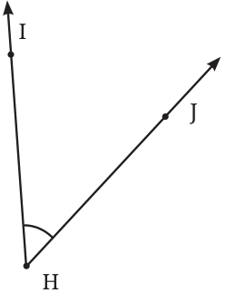</figure>
<ul class="qlist">
<li><span class="mk">2.</span><span class="lt">Find the degree measures of different angles in your classroom</span></li>
</ul>
<p>using your protractor.</p>
<h3 id="s-teacher-s-note">Teacher’s Note</h3>
<p>It is important that students make their own protractor and use it to measure different angles before using the standard protractor so that they know the concept behind the marking of the standard protractor.</p>
<ul class="qlist">
<li><span class="mk">3.</span><span class="lt">Find the degree measures for the angles given below. Check if</span></li>
</ul>
<p>your paper protractor can be used here!</p>
<figure class="fig wide">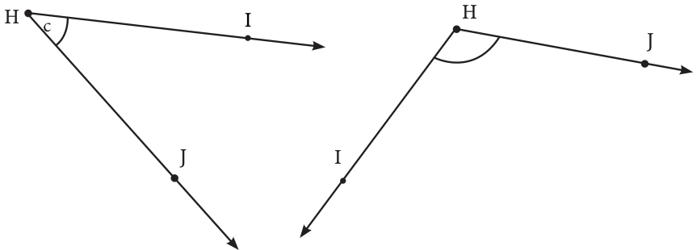</figure>
<ul class="qlist">
<li><span class="mk">4.</span><span class="lt">How can you find the degree measure of the angle given below</span></li>
</ul>
<p>using a protractor?</p>
<figure class="fig">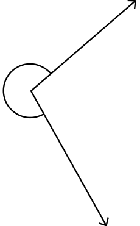</figure>
<ul class="qlist">
<li><span class="mk">5.</span><span class="lt">Measure and write the degree measures for each of the following</span></li>
</ul>
<p>angles:</p>
<figure class="fig">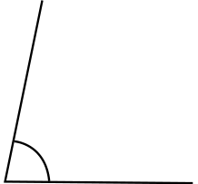</figure>
<ul class="qlist">
<li><span class="mk">a.</span><span class="lt">b.</span></li>
</ul>
<figure class="fig">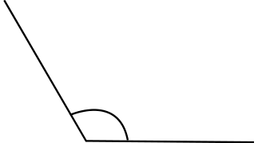</figure>
<figure class="fig">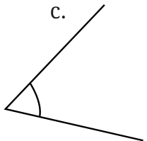</figure>
<figure class="fig side-fig">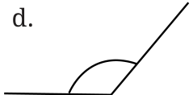</figure>
<figure class="fig side-fig">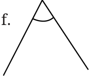</figure>
<p>e.</p>
<figure class="fig">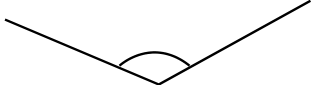</figure>
<ul class="qlist">
<li><span class="mk">6.</span><span class="lt">Find the degree measures of \(\angle BXE\), \(\angle CXE\), \(\angle AXB\) and \(\angle BXC\).</span></li>
</ul>
<figure class="fig wide">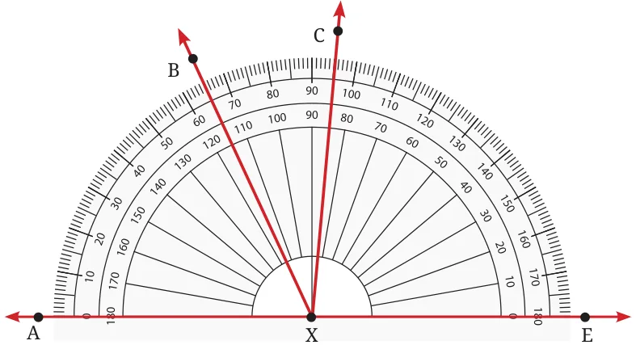</figure>
<ul class="qlist">
<li><span class="mk">7.</span><span class="lt">Find the degree measures of \(\angle PQR\), \(\angle PQS\) and \(\angle PQT\).</span></li>
</ul>
<figure class="fig wide">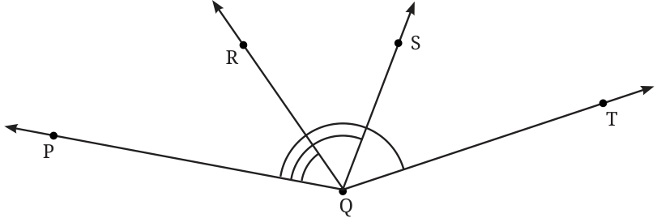</figure>
<ul class="qlist">
<li><span class="mk">8.</span><span class="lt">Make the paper craft as per the given instructions. Then, unfold</span></li>
</ul>
<p>and open the paper fully. Draw lines on the creases made and measure the angles formed.</p>
<figure class="fig wide">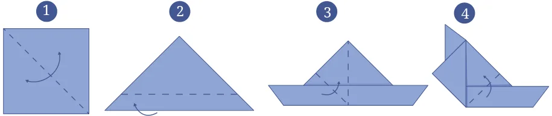</figure>
<figure class="fig wide">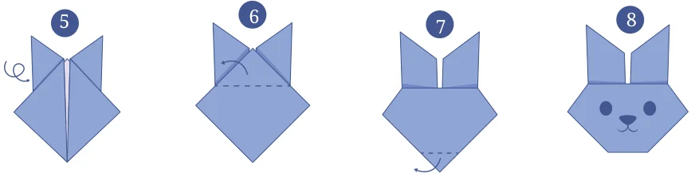</figure>
<ul class="qlist">
<li><span class="mk">9.</span><span class="lt">Measure all three angles of the triangle shown in Fig. 2.21 (a), and</span></li>
</ul>
<p>write the measures down near the respective angles. Now add up the three measures. What do you get? Do the same for the triangles in Fig. 2.21 (b) and (c). Try it for other triangles as well, and then make a conjecture for what happens in general! We will come back to why this happens in a later year.</p>
<figure class="fig">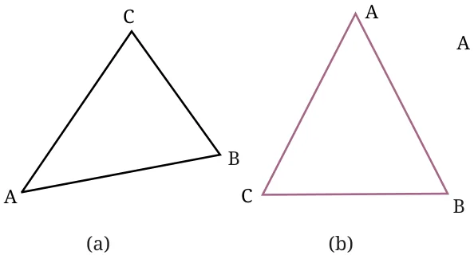<figcaption>Fig. 2.21</figcaption></figure>
<figure class="fig side-fig">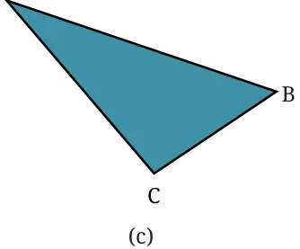</figure>
<h3 id="s-mind-the-mistake-mend-the-mistake">Mind the Mistake, Mend the Mistake!</h3>
<p>A student used a protractor to measure the angles as shown below. In each figure, identify the incorrect usage(s) of the protractor and discuss how the reading could have been made and think how it can be corrected.</p>
<figure class="fig table-fig wide">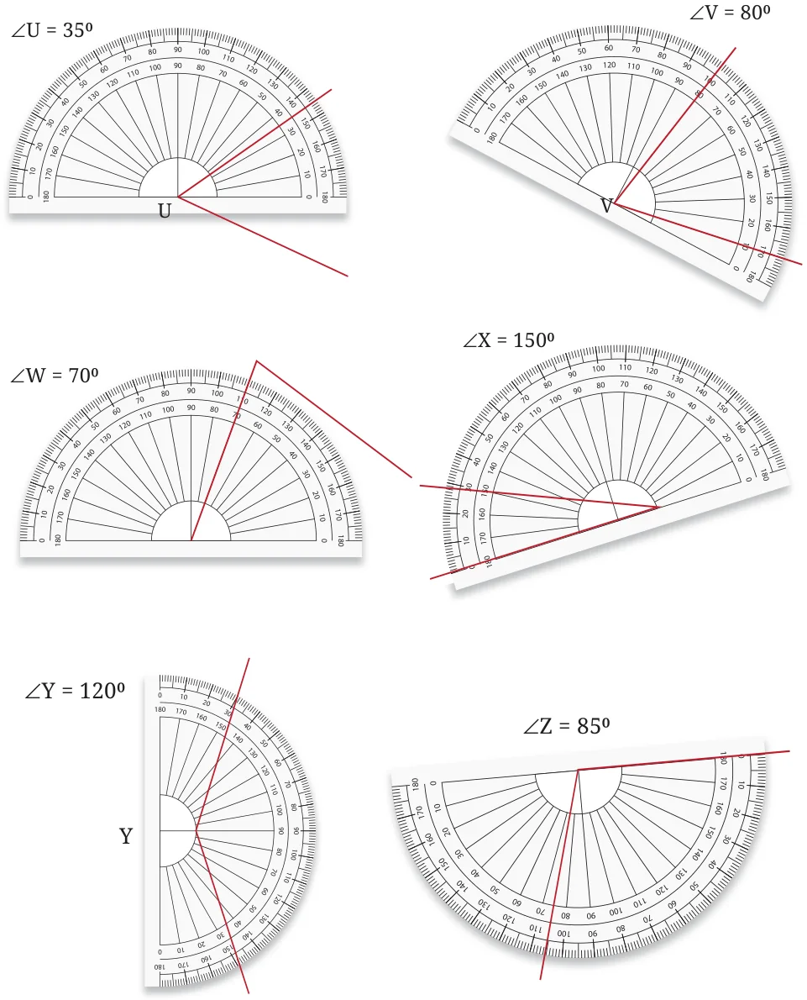</figure>
</article>
<nav class="pager"><a class="" data-nav="prev" href="../../02-lines-and-angles/18-labelled-protractor/index.html"><span class="dir">← Previous</span><span class="t">Labelled protractor</span><span class="ch">Lines and Angles</span></a><a class="nx" data-nav="next" href="../../02-lines-and-angles/20-figure-it-out/index.html"><span class="dir">Next →</span><span class="t">Figure it Out</span><span class="ch">Lines and Angles</span></a></nav>
</main><footer class="site">Generated from the source textbook PDFs · text, figures and exercises belong to their respective publishers.</footer><script defer src="https://cdn.jsdelivr.net/npm/katex@0.16.11/dist/katex.min.js" crossorigin="anonymous"></script>
<script defer src="https://cdn.jsdelivr.net/npm/katex@0.16.11/dist/contrib/auto-render.min.js" crossorigin="anonymous"
  onload="renderMathInElement(document.body,{delimiters:[
    {left:'\\(',right:'\\)',display:false},
    {left:'$$',right:'$$',display:true},
    {left:'\\[',right:'\\]',display:true}],throwOnError:false,ignoredTags:['script','noscript','style','textarea','pre','code']})"></script>
<script src="../../../assets/book.js"></script>
</body>
</html>
